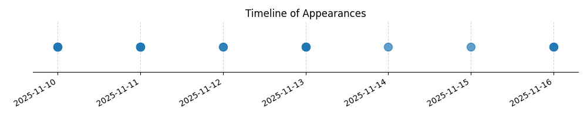

Kategorie: Letecké předpisy
Správná odpověď A je založena na standardních leteckých předpisech, které ukládají veliteli letadla (nebo jiné odpovědné osobě) povinnost bezodkladně ohlásit vážnou leteckou nehodu příslušným úřadům. Ostatní možnosti nejsou v souladu s těmito předpisy.

| Datum výskytu |
|---|
| 2025-11-16 |
| 2025-11-15 |
| 2025-11-14 |
| 2025-11-13 |
| 2025-11-12 |
| 2025-11-11 |
| 2025-11-10 |